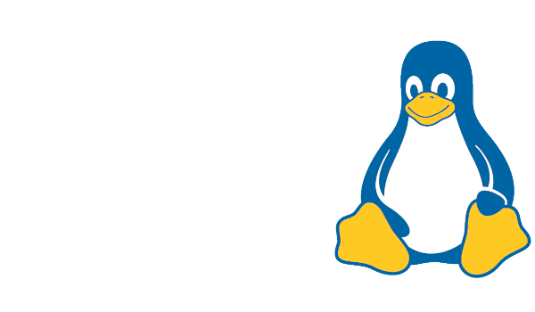

ALUG@UCI is committed to developing and supporting open-source projects free (as in freedom) for everyone! Here is our directory of projects developed and maintained by our community.
| Project | Description | Maintainer(s) |
|---|---|---|
| ALUG@UCI Community Services | Infrastructure that powers ALUG@UCI's campus-wide member-hosted services, from game servers to web hosting. | Chris Rios |
| Peterfetch | A simple, fast, and lightweight fetch utility for UCI students. | Ben Landon |
Made with ❤️ by Linux users, for everyone!